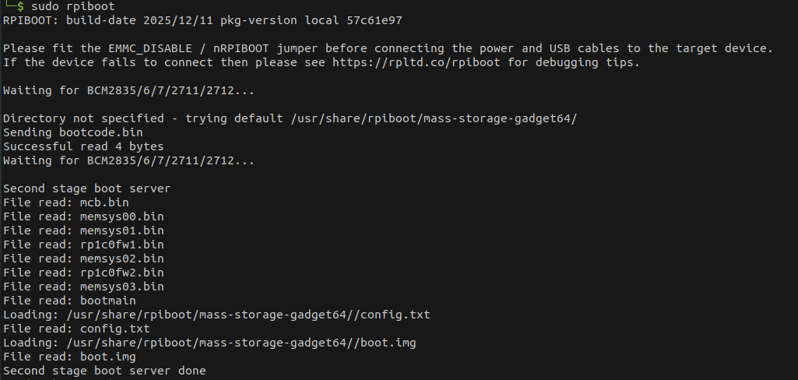
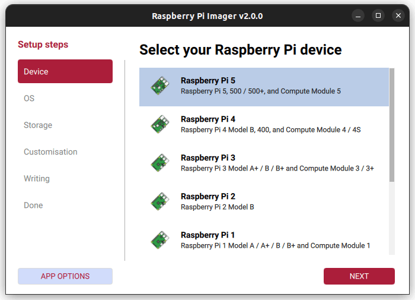
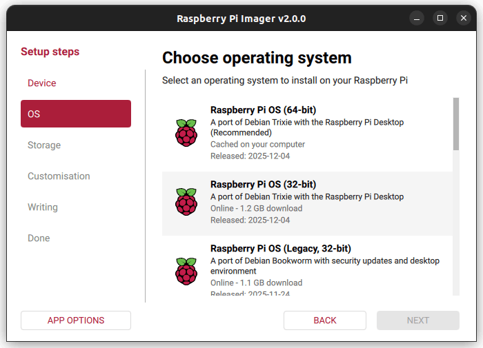
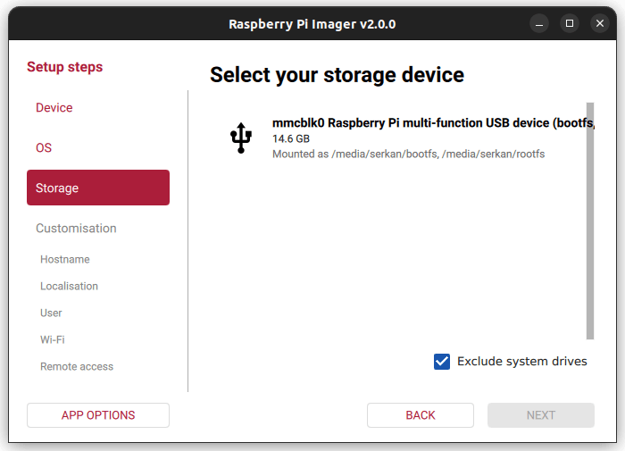
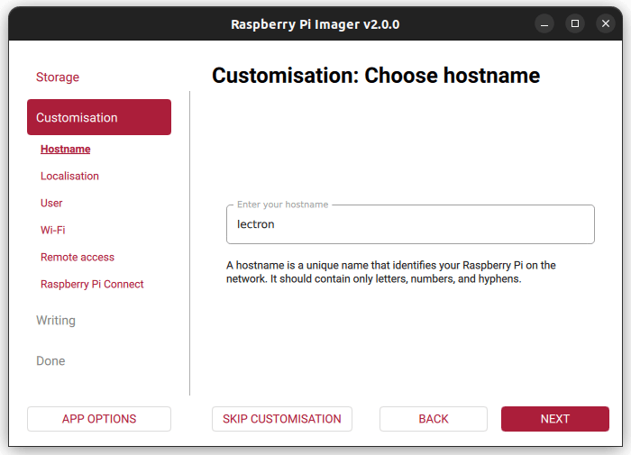
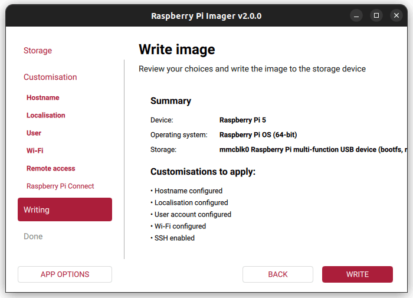

Initial Installation¶
To flash the eMMC on a Raspberry Pi Compute Module, the following components are required:
- Host device: A computer running Linux, Windows, or macOS
- Micro USB cable
- Raspberry Pi Compute Module with a compatible carrier board
CM5 Installation¶
Set up the Board¶
- To disable eMMC boot on the Raspberry Pi: Set the nRPI_BOOT pin to HIGH using the 8-pin DIP switch on the board (typically the 3rd switch).
- Connect the board to the host device using a Micro USB cable.
Set up the Host Device¶
Note
The steps below follow the official Raspberry Pi documentation without modification. Reference: Raspberry Pi – eMMC flashing documentation
- Install the rpiboot tool (or build it from source):
sudo apt install rpiboot - Connect the IO Board to power.
- Run rpiboot:
sudo rpiboot - After a few seconds, the Compute Module will appear as a USB mass storage device.
- Check
/dev/(commonly/dev/sdaor/dev/sdb) - Alternatively, run lsblk and identify the device matching the module’s storage size.
- Check
- Download the Windows installer for rpiboot or build it from source.
- Run the installer. (Do not close any driver installation windows during setup.)
- Reboot the system.
- Connect the IO Board to power. Windows will automatically detect the hardware and install required drivers.
- For CM4 and newer devices:
- Select “Raspberry Pi – Mass Storage Gadget – 64-bit” from the Start Menu.
- The eMMC or NVMe device will appear as a USB mass storage device.
- A serial debug console is also exposed.
- For CM3 and older devices:
- Run RPiBoot.exe.
- The Compute Module eMMC will appear as a USB mass storage device.
- Build rpiboot from source.
- Connect the IO Board to power.
- Run the rpiboot executable from the terminal:
rpiboot -d mass-storage-gadget64 - When prompted with “The disk you inserted was not readable by this computer.” Click Ignore.
- The Compute Module eMMC will now appear as a USB mass storage device.
rpiboot
The output of the sudo rpiboot command should appear as expected. If it remains stuck at Waiting for BCM2835/6/7/2711/2712...,
install rpiboot from source..

Raspberry Pi Imager¶
- Launch the Raspberry Pi Imager application.
- Select Raspberry Pi 5 as the target board.

- Choose the operating system; Raspberry Pi OS (64-bit) is recommended.

- As the storage device, select the Raspberry Pi eMMC detected by your computer.

- In the advanced settings section, configure: Username, Hostname, Wi-Fi credentials, SSH access

- Start the flashing process by clicking
Writeand wait until it completes.

Note
- After the installation is completed, make sure to set pin 3 on the 8-pin DIP switch back to the LOW state.
- Before performing this step, power off the device.
- Disconnect the Micro USB cable.
- Set pin 3 of the DIP switch to the LOW position.
- Finally, reconnect the power supply to restart the system.
FMU Firmware Installation¶
This section contains step-by-step instructions for flashing the bootloader and firmware onto the FMU IO (F103) and FMU MAIN (H753) chips using STM32CubeProgrammer.
Wiring — Before You Start
Before the flashing process, make sure the debug cable and the ST-Link / CubeProgrammer pins are connected correctly:
The Autopilot board must be powered (via USB or XT30) before performing these steps.
ArduPilot vs. PX4
The FMU bootloader and FMU firmware files differ depending on the autopilot software (ArduPilot or PX4). The flashing procedure remains the same — only the target files change.
Connection Settings¶
Select the connection settings on the right-hand panel as shown below, then use the Connect button. After connecting, the target chip is shown in the bottom-right corner (STM32F10x for the IO chip, STM32H7 for the FMU chip).

1. IO Chip Flashing (F103)¶
Hardware Connections
- Connect the debug cable (10-pin GHS-10) to the IO debug port.
- Connect the ST-Link to the computer.
STM32CubeProgrammer Steps
- Launch STM32CubeProgrammer. Select the connection settings on the right panel and click Connect.
- Switch to the programming panel using the left-hand toolbar.
- After the ST-Link connects, verify that STM32F10x is displayed in the bottom-right corner.
- Click Full chip erase to wipe any existing code. In the confirmation pop-up ("Are you sure you want to erase full chip flash memory"), click OK.
- Select the provided IO bootloader file.
- Check the programming configuration options as indicated in the reference layout.
- Click Start Programming.

- Once complete, dismiss the "Download verified successfully" and "File download complete" alerts by clicking OK.
- The IO installation is complete.
- For safety, disconnect from the hardware by clicking Disconnect (which replaces the Connect button).
2. FMU Chip Flashing (H753)¶
This stage installs the Bootloader first, followed by the FMU Firmware.
Hardware Connections
- Connect the debug cable (10-pin GHS-10) to the FMU debug port.
- Connect the ST-Link to the computer.
FMU Bootloader Flashing¶
- Launch STM32CubeProgrammer and click Connect (top-right).
- Switch to the programming panel using the left-hand toolbar.
- After the ST-Link connects, verify that STM32H7 is displayed in the bottom-right corner.
- Click Full chip erase to wipe any existing code, then click OK on the confirmation pop-up.
- Select the provided FMU Bootloader file.
- Check the installation options as indicated in the reference layout.
- Click Start Programming.

- Once complete, close the "Download verified successfully" and "File download complete" prompts by clicking OK.
- The FMU Bootloader installation is complete.
- For safety, click Disconnect (top-right).
FMU Firmware Flashing¶
- Launch STM32CubeProgrammer and click Connect (top-right).
- Switch to the programming panel using the left-hand toolbar.
- Ensure that STM32H7 is displayed in the bottom-right corner as the target chip.
- Select the provided FMU Firmware file.
-
Check the programming options as shown in the reference image.
CRITICAL
Uncheck the Full chip erase box to prevent wiping the bootloader you just installed.
-
Click Start Programming to begin flashing the firmware.

- When the operation completes, confirm and close the "Download verified successfully" and "File download complete" alerts by clicking OK.
- The FMU Firmware installation is complete.